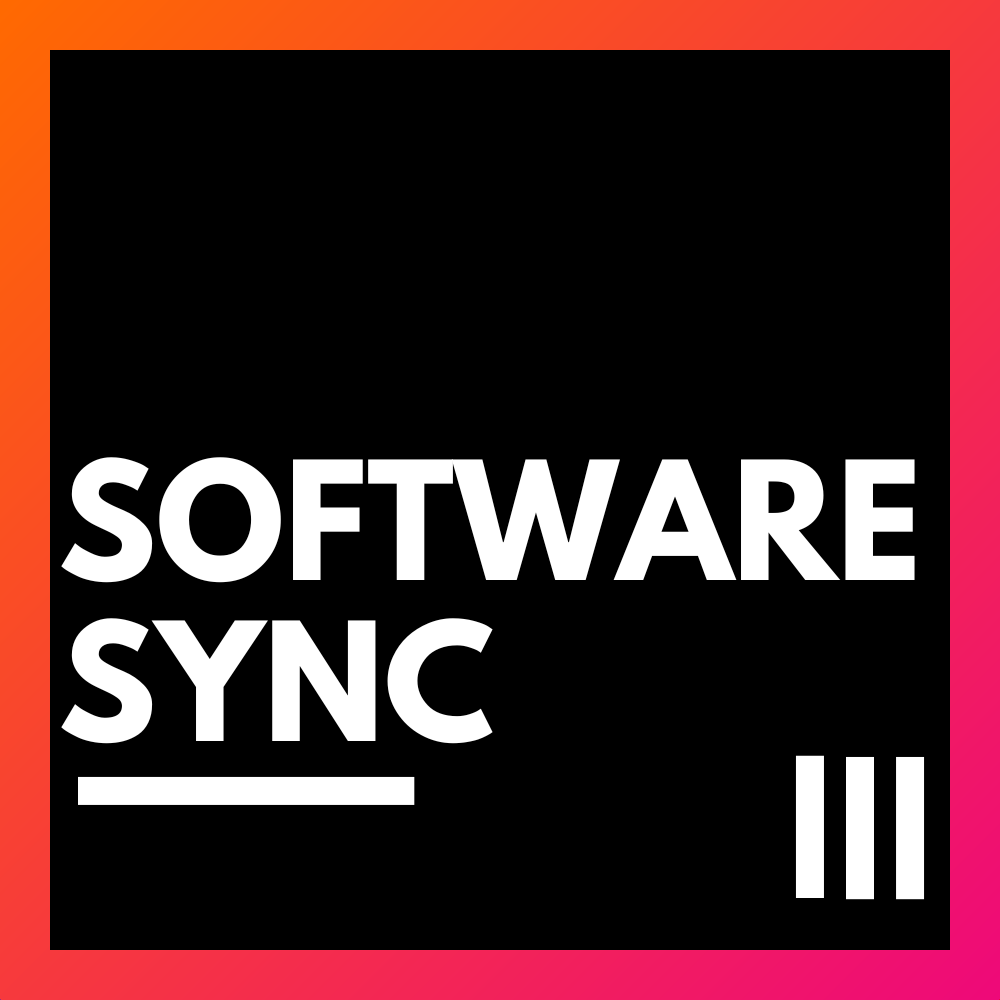

SOFTWare-Sync
Aperçu
Objectif :
L'application SOFTware-Sync traite des ensembles de fichiers XML ou PDF générés par GROBID, ainsi que des fichiers JSON provenant de SOFTCITE, afin de produire soit des fichiers XML enrichis, soit des fichiers CSV résumant les mentions de logiciels.
Types de fichiers en entrée :
- Sorties GROBID : Fichiers XML ou PDF contenant des informations structurées extraites de documents scientifiques.
- Sorties SOFTCITE : Fichiers JSON contenant les résultats de la détection de citations de logiciels.
Options de sortie :
- Fichiers XML enrichis : Fichiers XML augmentés avec des détails sur chaque logiciel mentionné dans les documents d'entrée.
- Fichiers CSV récapitulatifs : Fichiers CSV listant chaque mention de logiciel détectée dans les documents d'entrée, accompagnée des métadonnées pertinentes.
Installation
Depuis la source
- Clonez le dépôt SOFTware-Sync :
git clone https://github.com/Samuel-Scalbert/SOFTware-Sync
- Accédez au répertoire du projet :
cd SOFTware-Sync
- Installez les dépendances :
pip install -r requirements.txt
Fonctionnalités
Options disponibles pour SOFTware-Sync :
1. --enhance-dir : Améliore plusieurs fichiers XML dans un répertoire en les associant aux fichiers JSON correspondants.
Utilisation : python main.py --enhance-dir <chemin_dossier_xml> <chemin_dossier_json>
2. --enhance-file : Améliore un fichier XML unique en l'associant à un fichier JSON.
Utilisation : python main.py --enhance-file <chemin_xml> <chemin_json>
Options disponibles : "--project" / "--only-mention"
3. --builder : Construit des fichiers XML en combinant les fichiers Grobid TEI XML et les fichiers XML de métadonnées.
Utilisation : python main.py --builder <chemin_xml_grobid> <chemin_xml_meta>
4. --check-XML-META : Vérifie le nombre de fichiers XML disponibles par rapport au nombre de fichiers XML de métadonnées.
Utilisation : python main.py --check-XML-META <chemin_xml_grobid> <chemin_xml_meta>
5. --check-XML-JSON : Vérifie le nombre de fichiers XML disponibles par rapport au nombre de fichiers JSON.
Utilisation : python main.py --check-XML-JSON <chemin_xml> <chemin_json>
6. --csv-creator : Crée un fichier CSV affichant le nombre de mentions et leurs occurrences pour un logiciel donné.
Utilisation : python main.py --csv-creator <chemin_json>
7. --mentions-checker : Vérifie les fichiers JSON de mentions vides.
Utilisation : python main.py --mentions-checker <chemin_json>
8. --download-halid : Télécharge des fichiers à partir d'un identifiant HAL.
Utilisation : python main.py --download-halid <chemin_csv>
9. --help, -h : Affiche ce message d'aide.
Utilisation : python main.py --help
Utilisation
Depuis la source
Exécutez SOFTware-Sync avec la commande suivante :
python main.py
Exécutez SOFTware-Sync pour enrichir plusieurs fichiers XML dans un répertoire en les associant aux fichiers JSON correspondants :
python main.py --enhance-dir ../data/XML/ ../data/JSON/